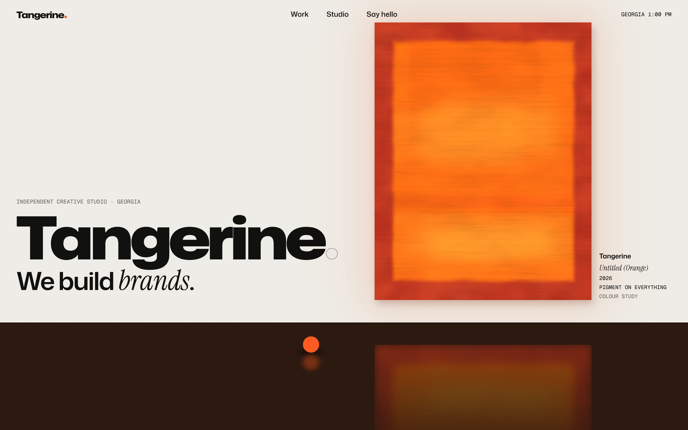
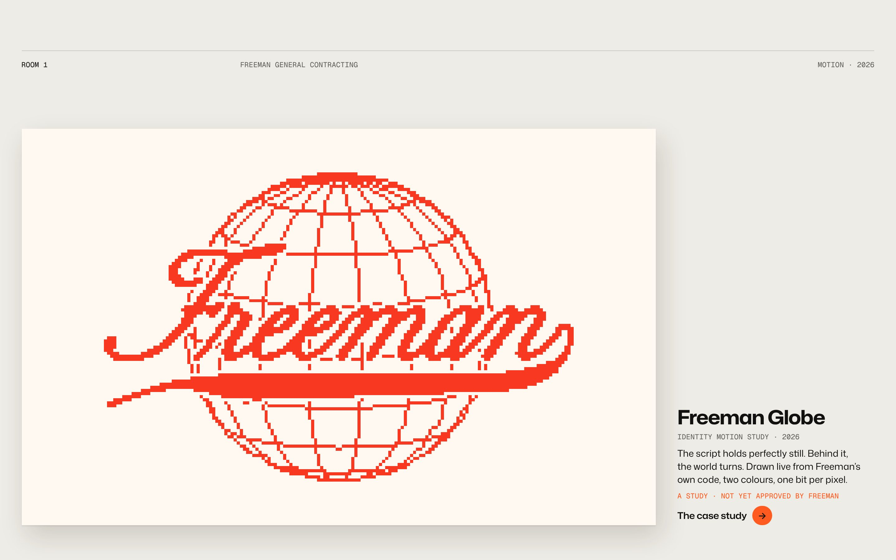
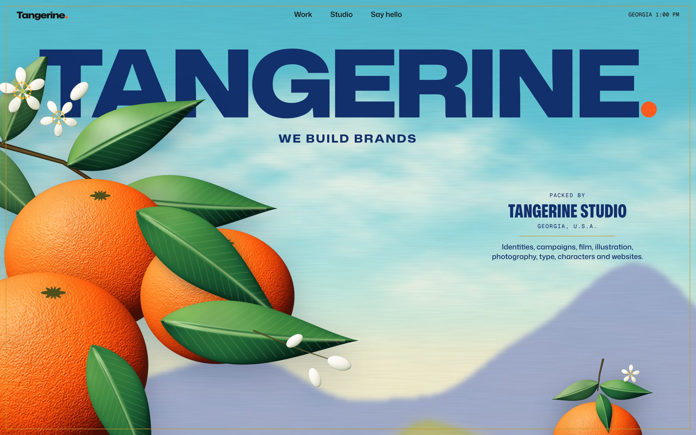
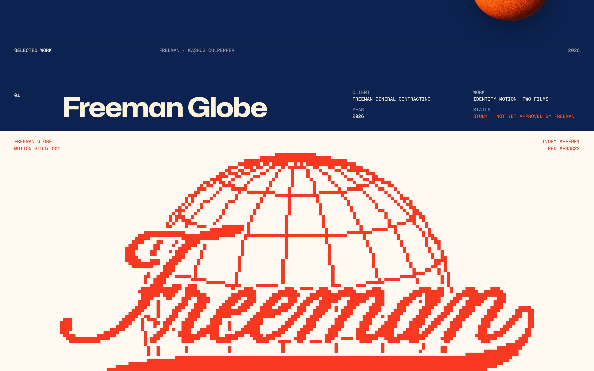
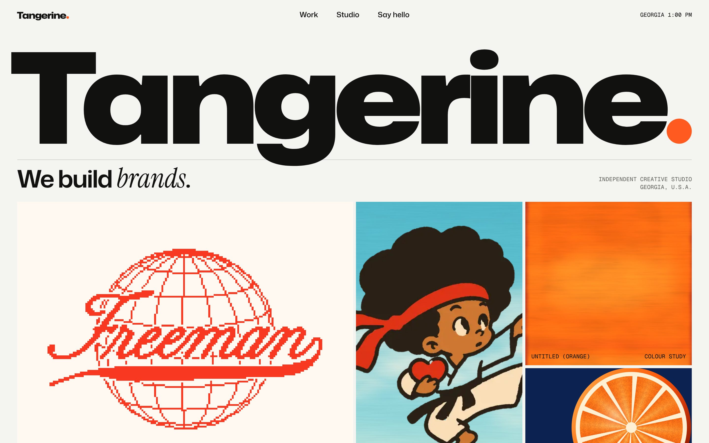
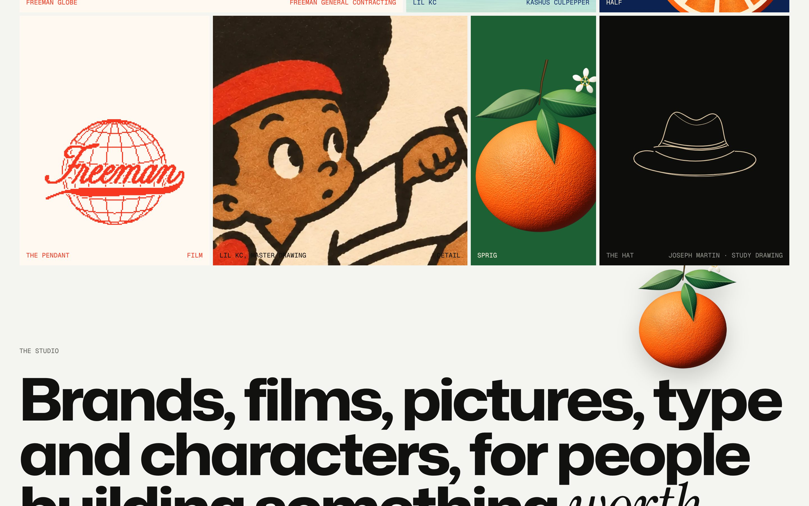

V6’s structure, with the citrus label’s richness and the painting’s light.
Three art directions for the homepage, all built on V6: the same type, grid and real work. Each takes a different route to colour, materiality and surprise. Visual language only; once a direction is chosen, it becomes the full site.
The home page is a room: a tall orange painting glowing on a white wall, reflected in a dark floor. The name is set on the wall. Its full stop has wandered off and is standing on the floor, looking at the painting. The work is hung in rooms with wall labels.
Quietest, most sophisticated. Real atmosphere without gradients.


The citrus label at contemporary scale. A painted turquoise sky, TANGERINE in navy extended Mona Sans, a heavy cluster of painted fruit and blossom crossing in front of the letters, a gold rule, and the label’s small print: Packed by Tangerine Studio, Georgia.
Most surprising, most unmistakably Tangerine. Colour that is alive.


V6’s paper and type, then straight into a dense, saturated mosaic of the real work and studio artwork, each tile in its own world colour. A sprig hangs into the studio statement; the footer is painted.
Most work-first. Most flexible for future campaigns and editorials.

